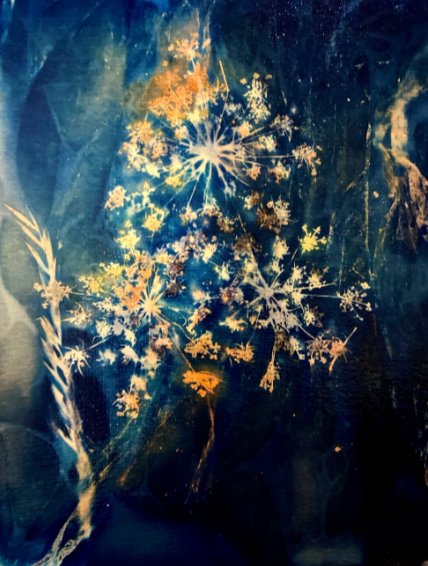

Une recette de chimie
Quand la science se fait art
Ere Victorienne. 1842. L’astronome, physicien, mathématicien et chimiste britannique John Herschel met au point un procédé révolutionnaire permettant de produire des impressions durables sur du papier sensible, donnant des images d’un bleu profond, appelé le bleu de Prusse. Dans ses recherches sur les propriétés chimiques des sels de fer, Herschel découvre que la réaction entre le citrate d'ammonium ferrique et le ferrocyanure de potassium, lorsqu’ils sont exposés à la lumière du soleil, produit un bleu intense et permet de fixer des images. Ce procédé est initialement utilisé pour reproduire des dessins et diagrammes techniques, mais il ne sera appelé cyanotype que plus tard par Herschel.
Parallèlement, Anna Atkins, une passionnée de botanique, fréquente le même cercle scientifique que Herschel, à savoir la Royal Society. Ils partagent une grande admiration pour la science et la photographie. Influencée par les travaux de son ami, Anna Atkins utilise le cyanotype pour créer des impressions détaillées de plantes marines et d'algues. Elle devient ainsi la première personne à publier un livre illustré de photographies (et non de dessins ou de gravures) : "Photographs of British Algae: Cyanotype Impressions" en 1843.
Ce livre est une étape clé dans l’histoire de la photographie. Il marque une révolution dans la manière d’illustrer la science et ouvre la voie à l’utilisation de la photographie comme moyen non seulement de documentation, mais aussi d’expression artistique. En effet, c’est le premier ouvrage connu à utiliser un procédé photographique pour produire des images, ce qui fait du travail d’Atkins une œuvre pionnière.
Au tournant du XXᵉ siècle, les photographes pictorialistes comme Gertrude Käsebier et Edward Steichen s'intéresseront au cyanotype. Mais c’est véritablement à partir des années 1960 que le procédé connaît un regain d’intérêt, surtout parmi les photographes expérimentaux. Toutefois, c’est dans les années 1970-1980, en réaction à l’industrialisation de la photographie argentique, que le cyanotype est redécouvert pour sa dimension artisanale et fait main, qui lui confère un caractère unique et authentique.
Aujourd'hui, le cyanotype reste un procédé vivant et largement apprécié, notamment pour son côté naturel, expérimental et esthétique. Il continue de séduire les artistes, qui l’utilisent pour explorer des approches visuelles innovantes, en réaffirmant son rôle central dans l’histoire de la photographie.
